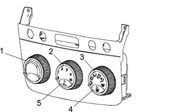
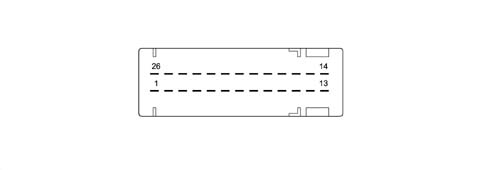
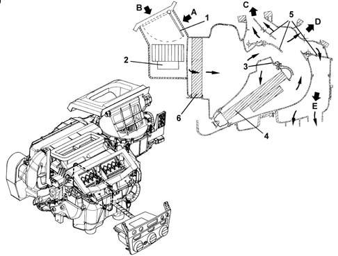
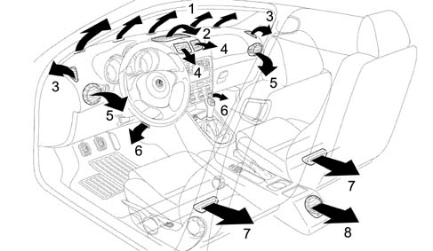

INTRODUCTION - HEATER
- Path
- Descriptions > 50 AUXILIARY UNITS > 5020 HEATER > INTRODUCTION - HEATER
- Kind
- system description
- Applies to
- all engines; all production periods
- Interactive page
- https://sloeber94.github.io/elrnDB-aGt/en/#/125000391
Applies to: all engines; all production periods
HEATER WITH MANUAL CONTROLS
Heater controls
The heater control unit is located in the middle of the facia. The controls are located outside the housing.

1 - Temperature setting selection knob
2 - Air ventilation selection knob
3 - Flow distribution selection knob
4 - Heated rear windscreen on button
5 - Recirculation function on button
Use the left-hand knob to select the required interior temperature from amongst 15 different positions. The two extreme positions correspond to the maximum cold and maximum heat requests.
The central knob adjusts air temperature to four flow settings (1, 2, 3 and 4).
The right-hand knob selects air distribution to the passenger compartment. Different distribution patterns are available.
The positions indicated by a white symbol correspond - in a clockwise direction - to:
- flow to front outlets only,
- flow to front and lower outlets,
- flow to lower outlets only,
- flow to lower outlets and windscreen,
- flow to windscreen only;
The last position, indicated in yellow, corresponds to the max. defrosting function. This automatically sets ideal conditions for rapidly demisting/defrosting the windscreen; i.e.:
- flow directed entirely to the windscreen;
- maximum air output
- as much warm air as possible taken into the mixture
- air taken from outside (regardless of recirculation button position);
The right button switches on the heated rear windscreen and the LED comes on.
When pressed, the central button activates the air recirculation function; when the button is pressed the LED comes on. If the button is not pressed, dynamic air is taken in from ouside due to the car's motion.
Control unit pin out
The control unit has a single connector with 26 pins.

The control unit pin out, for the version with a heater, is as follows:
Pin n° | Function | Pin n° | Function |
|---|---|---|---|
1 | Power earth | 14 | Coil A2 recirculation actuator |
2 | +30 positive from battery | 15 | Coil B2 recirculation actuator |
3 | + controlled by ignition INT/A | 16 | Coil B1 recirculation actuator |
4 | Not connected. | 17 | Coil A1 recirculation actuator |
5 | Not connected | 18 | Fan temperature feedback signal. |
6 | Not connected | 19 | Coil B2 distribution actuator |
7 | Not connected | 20 | Coil A2 distribution actuator |
8 | Not connected | 21 | Coil distribution actuator A1 |
9 | Not connected | 22 | Coil distribution actuator B1 |
10 | Fan control PWM signal. | 23 | Coil mixer actuator B2 |
11 | Not connected | 24 | Coil mixer actuator A1 |
12 | CAN A network (L) | 25 | Coil mixer actuator A2 |
13 | CAN B network (H) | 26 | Coil mixer actuator B1 |
For greater detail, see
See E6010 HEATER
.
The control unit adjusts the passenger compartment temperature to the user's setting as quickly as possible. While doing this, it takes into account existing settings and temperature readings.
CONVEYER/DISTRIBUTOR UNIT
It consists of two modules which contain inside:
- the fan
- the heater radiator
The diagram below illustrates a cross section of the assembly

1 - Intake/recirculation air flap
2 - Electric fan
3 - Air mixture flaps
4 - Heater radiator
5 - Air distrubution flaps
6 - Pollen filter
A - Recirculation air flow
B - Outside air flow
C - Windscreen/side windows air flow
D - Centre and side vents air flow
E - Interior air vents flow
The electric fan directs the flow of outside air towards the interior of the vehicle.
The air introduced into the passenger compartment from the outside passes through a combined filter, i.e. consisting of two layers:
- the first 'particle' layer has the task of trapping the small particles of fine dust and pollen
- the second 'active charcoal' layer is designed to trap certain pollutant elements in the atmosphere.
If, on the other hand, the recirculation function is activated, the special flap directs the flow of air from the inside the pasenger compartment. The flow of air initally comes into contact with the evaporator, then it partly or totally envelops the heater radiator, depending on the position of the mixture flap. Lastly, the air is sent to the various vents depending on the position of the upper, centre and lower distribution flaps. All the flaps are operated by electric motors controlled by the control unit.
Interior air circulation diagram
The diagram illustrates the circulation of the air in the passenger compartment.

1 - Upper fixed vent for defrosting or demisting windscreen
2 - Upper centre adjustable vent
3 - Fixed vents for defrosting or demisting side windows
4 - Adjustable centre vents
5 - Adjustable side vents
6 - Front footwell fixed vents
7 - Rear footwell fixed vents
8 - Rear footwell air vents